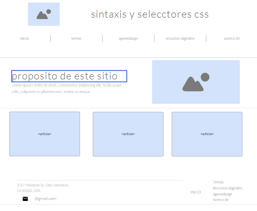

estas tiene un inicio y un fin de etiqueta que deben ser descritos en forma correcta para dar a entender al programa o pagina donde va ir y que va hacer cada elemento
tomado y adaptado de :
en este sitio se abordara el tema Sintaxis y selctores css atravez de objetos de aprendisaje virtuales
que promuevan el estudio web y de facil comprension, ademas de dar solucion a la actividad para la asignatura
diseño web
mokcup de la pagina
